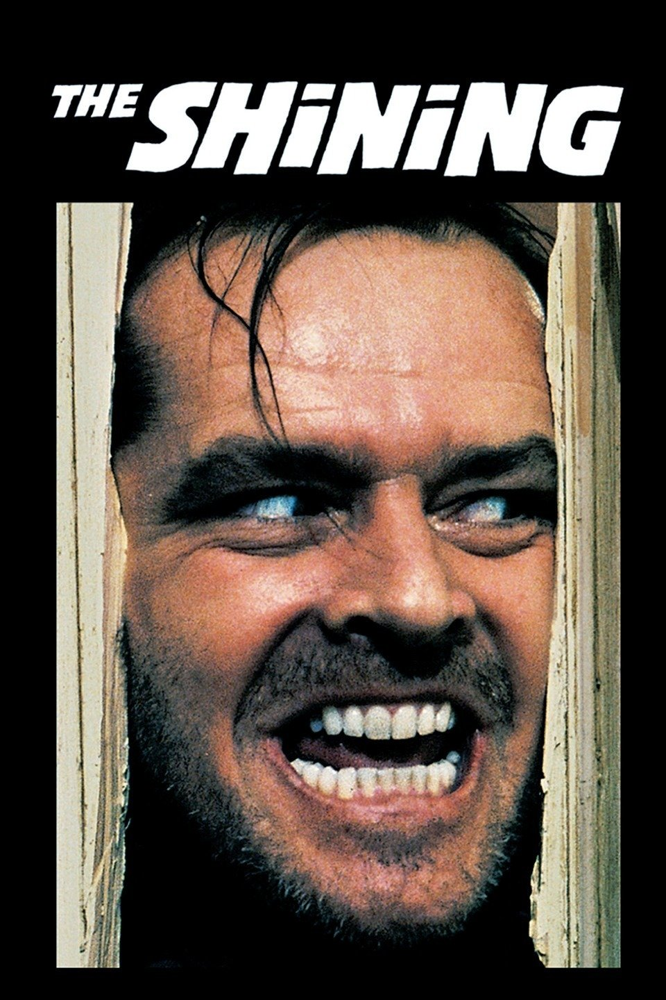

Een film gebaseerd op het boek "The Shining" geschreven door Stephen King
De film The Shining is geregisseerd door Stanley Kubrick die ook onder anderen "2001: A space odyssee" en "Full metal jacket" heeft geregisseerd
Een auteur en zijn gezin gaan naar een ingesneeuwd hotel, zodat hij daar in alle rust kan schrijven. Zijn zoon Danny krijgt echter steeds meer visioenen en zijn vader begint langzaam maar zeker door te draaien.
Sem rated this movie 7 stars and a thumbs up.